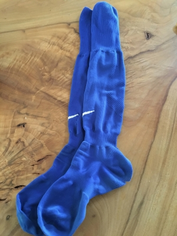
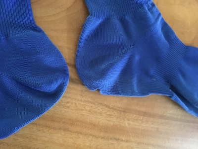

くつしたさん、ご苦労様。
小学校の4年生以降のカテゴリーで公式戦が始まり、
だんだんハードになって行くサッカー。
身体が大きくなると体重も重くなって、ケガが少しずつ増えて行く時期ですね。
ハルも先月末までひざ痛で練習を休んでいましたが、
ひざ痛、かかと痛は、サッカー少年には最もポピュラーな
スポーツ障害です。
週末に使用したユニフォームのソックスを洗濯した時、
ずいぶんくたびれて、破れていたので新しいものに替えました。

古くなったソックスには、サッカーをするたびにヤツらのかかとが
強い負荷を受けていた証拠が残っていました。

↑
右側のソックスのかかとがすり切れて破れています。
おそらく破れている方は左足にはいていたソックスでしょう。
もう一方のかかとの痛み具合とはまるで違います。
サッカーで起こるスポーツ障害は、
圧倒的に軸足となる方の足に発生することが多いです。
利き足は、シュートを打ったりと使用頻度が高いので、
衝撃をより受けているように思われがちですが、
実は体重を支えて踏ん張る、軸足の方により負荷がかかってきます。
子どもは足裏のアーチの形成が未熟で、正しい形のアーチができていないと、
地面からの衝撃が吸収できず、さらに強い負荷がかかります。
子どもが使っているスパイクのかかと部分が、
えぐれたように削れているのをときどき見かけますが、
かかとにかかる衝撃は、おそらく私たちが想像するよりも
はるかに激しいものじゃないかと思います。
特にスパイクは、普通のくつに比べて4倍もの負荷がかかるそうです。
できたらスポーツ障害を発症しないよう予防したいと思いますね・・・。
予防って言ってもなかなか大変なんですが(汗)、ハルはとりあえず
新しいスパイクに替えるタイミングで、シューフィッターさんに見てもらって
インソールを入れようと思ってます。
・・・あとは、ストレッチか ? (←これが一番大事なんだケド、一番大変・・・)
ハルのかかとの衝撃を受け続けてすり切れたくつしたさん。
ご苦労様でした～。